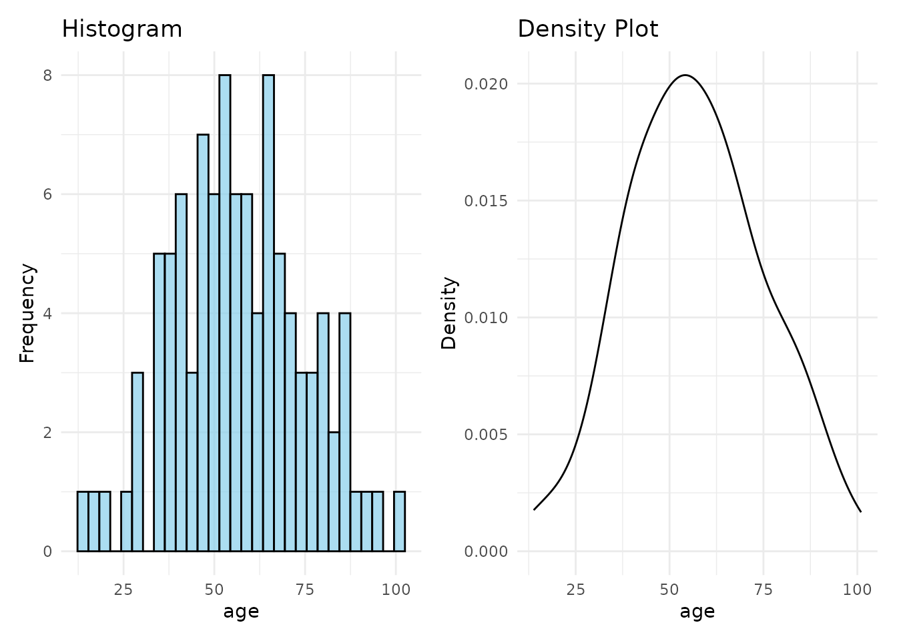
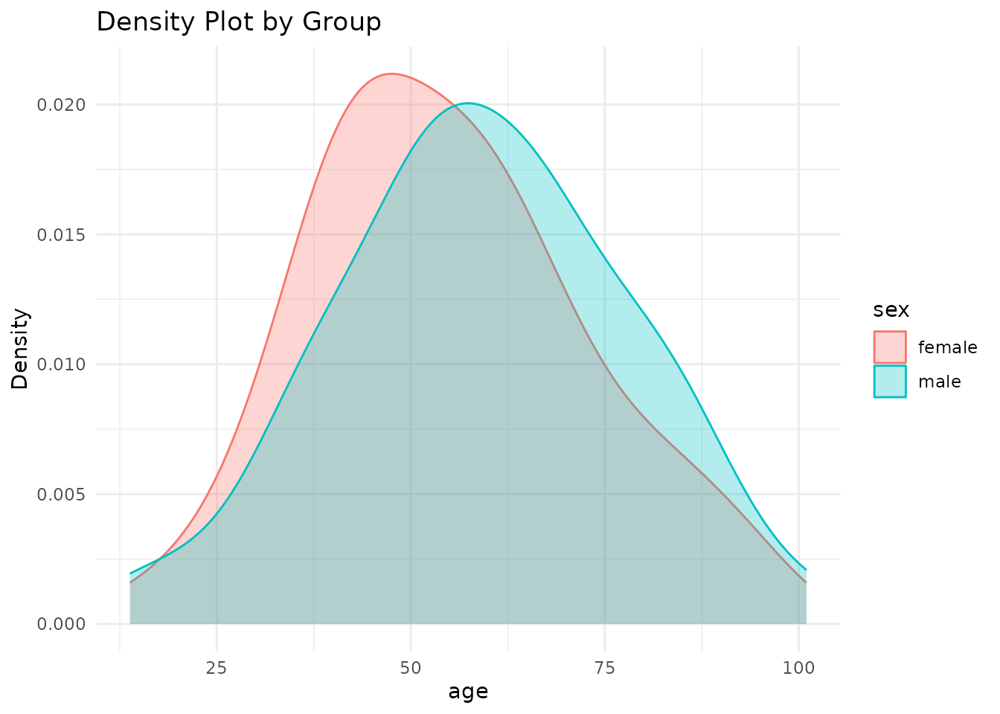
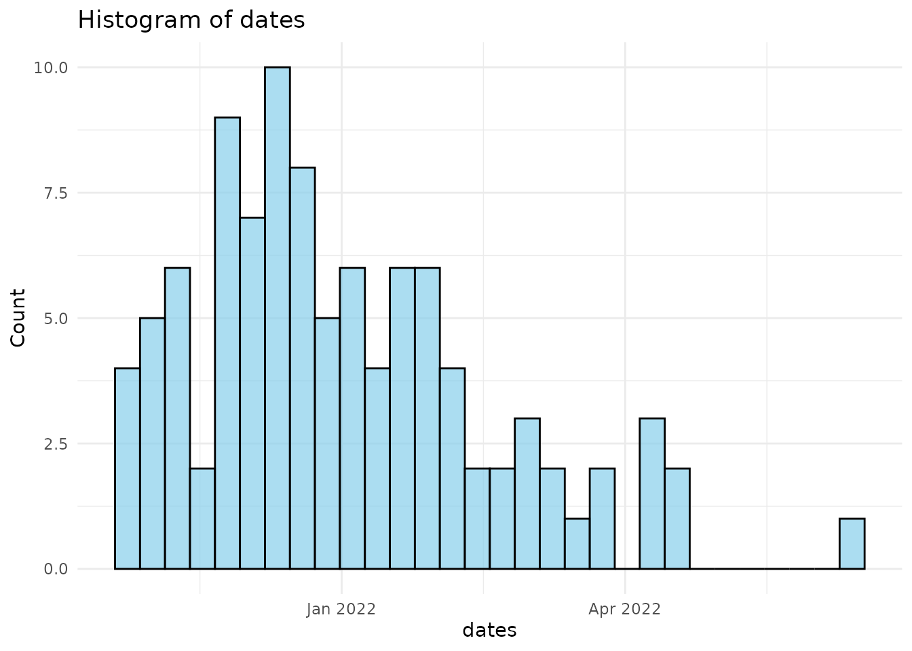
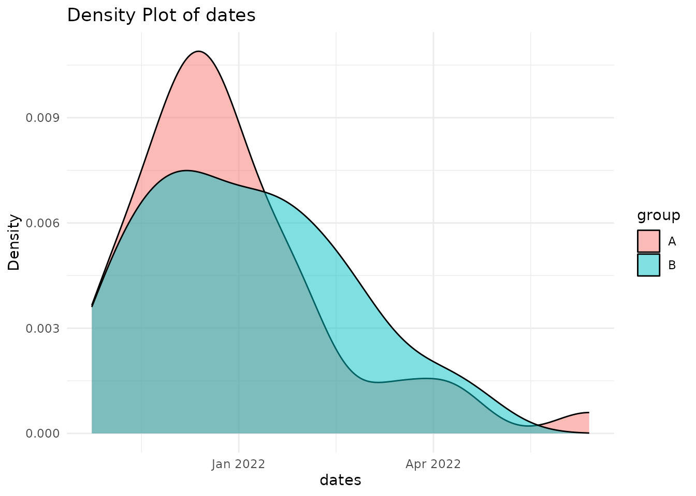
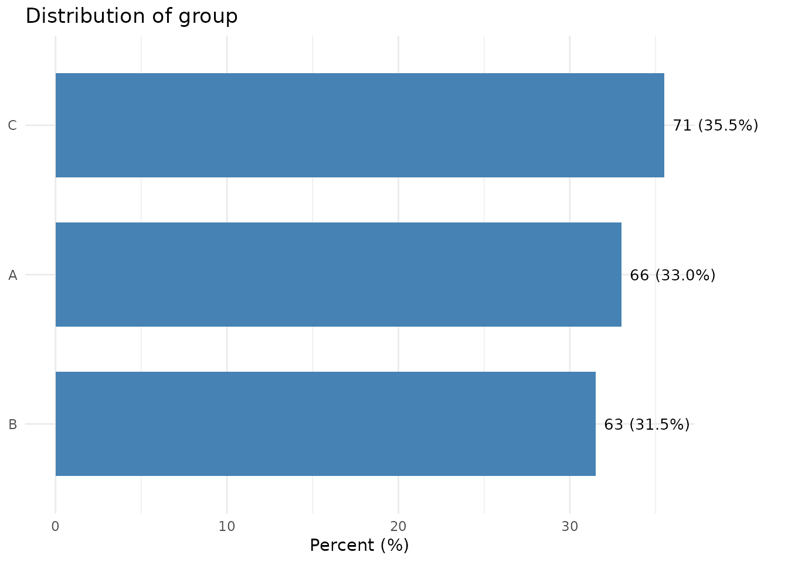
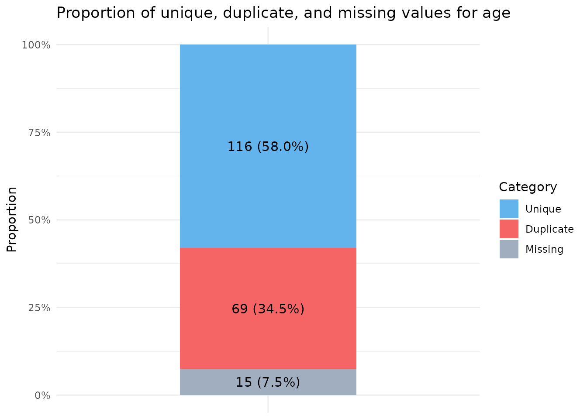
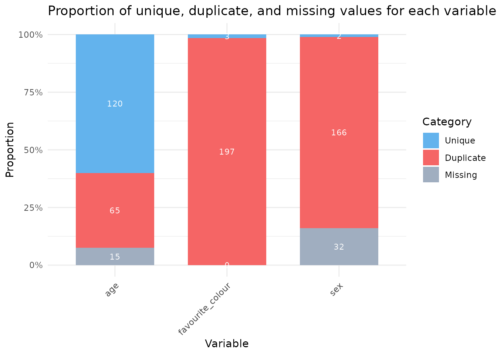

Exploring data with sumvar
Source:vignettes/exploring-data-with-sumvar.Rmd
exploring-data-with-sumvar.RmdIntroduction
The sumvar package provides simple and easy to use tools for summarising continuous and categorical data, inspired by Stata’s “sum” and “tab” commands. All functions are tidyverse/dplyr pipe-friendly and return tibbles.
Why use sumvar?
- Simple one-line commands to explore variables for R users
- Pipe-friendly tidyverse integration
- Tabular summaries which can be stored as tibbles and used for downstream analysis.
When I first moved from Stata to R about 5 years ago, the main thing I missed was the simplicity of the “sum” and “tab” functions to efficiently explore data. Most template code to perform these commands, in introductory R books or tutorials eg. https://r4ds.hadley.nz/data-tidy.html, takes typically 3-5 lines to replicate these functions in R. I couldn’t find a package that could quite as simply and efficiently explore data.
Sumvar is fast and easy to use, and brings these variable summary functions to R.
Continuous Data
We call dist_sum() to explore a continous variable.
The tibble output shows: the number of rows in the data, and number missing, the median, interquartile range (25th and 75th centiles), mean, the standard deviation, and 95% confidence intervals using the Wald method (normal approximation), and the minimum and maximum values.
Dist_sum() will show a density plot and histogram for a single variable, or a grouped density plot when there is a grouping varialbe.
You can save the output from dist_sum as a tibble and use the
estimates for downstream analysis, eg.
sum_df <- df %>% dist_sum(age, sex)
# Example data
set.seed(123)
df <- tibble::tibble(
age = rnorm(100, mean = 50, sd = 20),
sex = sample(c("male", "female"), 100, replace = TRUE)) %>%
dplyr::mutate(age = dplyr::if_else(sex == "male", age + 10, age))
# Call dist_sum
df %>% dist_sum(age)
#> # A tibble: 1 × 14
#> n n_miss median p25 p75 mean sd ci_lower ci_upper min max
#> <int> <int> <dbl> <dbl> <dbl> <dbl> <dbl> <dbl> <dbl> <dbl> <dbl>
#> 1 100 0 55.6 44.0 68.1 56.9 18.2 53.3 60.5 13.8 101.
#> # ℹ 3 more variables: n_outliers <int>, shapiro_p <dbl>, normal <lgl>
df %>% dist_sum(age, sex)
#> # A tibble: 2 × 17
#> sex n n_miss median p25 p75 mean sd min max n_outliers
#> <chr> <int> <int> <dbl> <dbl> <dbl> <dbl> <dbl> <dbl> <dbl> <int>
#> 1 female 49 0 52.5 41.1 65.6 54.7 17.6 16.3 93.7 0
#> 2 male 51 0 57.2 46.8 71.3 59.0 18.6 13.8 101. 0
#> # ℹ 6 more variables: shapiro_p <dbl>, ci_lower <dbl>, ci_upper <dbl>,
#> # normal <lgl>, p_ttest <dbl>, p_wilcox <dbl>Dates
To explore the distribution of dates, call dist_date() - it is similar to dist_sum. This can also be grouped by a second grouping variable. With a single date, a histogram is shown; when a grouping variable is also called, a density plot is shown.
df3 <- tibble::tibble(
dates = as.Date("2022-01-01") + rnorm(n=100, sd=50, mean=0),
group = sample(c("A", "B"), 100, TRUE)) %>%
dplyr::mutate(dt = dplyr::case_when(group == "A" ~ dates + 10, TRUE ~ dates))
df3 %>% dist_date(dates)
#> # A tibble: 1 × 7
#> n n_miss min p25 median p75 max
#> <int> <int> <date> <date> <date> <date> <date>
#> 1 100 0 2021-10-25 2021-11-26 2021-12-22 2022-01-28 2022-06-12
df3 %>% dist_date(dates, group)
#> # A tibble: 2 × 8
#> group n n_miss min p25 median p75 max
#> <chr> <int> <int> <date> <date> <date> <date> <date>
#> 1 A 43 0 2021-10-25 2021-11-25 2021-12-17 2022-01-16 2022-06-12
#> 2 B 57 0 2021-10-27 2021-12-01 2022-01-03 2022-02-07 2022-04-20Categorical Data
tab1() produces a tibble showing the distribution of a categorical variable and illustrates using a horizontal bar chart.

Two-way tables
tab() creates a cross-tabulation of two categorical variables. By default it shows counts and row percentages, with row and column totals.
df_tab <- dplyr::tibble(
treatment = sample(c("control", "treatment"), 100, replace = TRUE),
outcome = sample(c("improved", "stable", "worse"), 100, replace = TRUE)
)
df_tab %>% tab(treatment, outcome)
#> | outcome |
#> treatment | improved | stable | worse | Total
#> -----------+------------+------------+------------+-------
#> control | 15 (30.6%) | 18 (36.7%) | 16 (32.7%) | 49
#> treatment | 13 (25.5%) | 18 (35.3%) | 20 (39.2%) | 51
#> -----------+------------+------------+------------+-------
#> Total | 28 (28.0%) | 36 (36.0%) | 36 (36.0%) | 100
#>
#> Chi-squared: X²(2) = 0.548, p = 0.761
#> Fisher's Exact: p = 0.771
df_tab %>% tab(treatment, outcome, show = "col") # column percentages
#> | outcome |
#> treatment | improved | stable | worse | Total
#> -----------+-------------+-------------+-------------+-------
#> control | 15 (53.6%) | 18 (50.0%) | 16 (44.4%) | 49
#> treatment | 13 (46.4%) | 18 (50.0%) | 20 (55.6%) | 51
#> -----------+-------------+-------------+-------------+-------
#> Total | 28 (100.0%) | 36 (100.0%) | 36 (100.0%) | 100
#>
#> Chi-squared: X²(2) = 0.548, p = 0.761
#> Fisher's Exact: p = 0.771
df_tab %>% tab(treatment, outcome, test = "chi") # with chi-squared test
#> | outcome |
#> treatment | improved | stable | worse | Total
#> -----------+------------+------------+------------+-------
#> control | 15 (30.6%) | 18 (36.7%) | 16 (32.7%) | 49
#> treatment | 13 (25.5%) | 18 (35.3%) | 20 (39.2%) | 51
#> -----------+------------+------------+------------+-------
#> Total | 28 (28.0%) | 36 (36.0%) | 36 (36.0%) | 100
#>
#> Chi-squared: X²(2) = 0.548, p = 0.761
result <- df_tab %>% tab(treatment, outcome) # save as tibble
#> | outcome |
#> treatment | improved | stable | worse | Total
#> -----------+------------+------------+------------+-------
#> control | 15 (30.6%) | 18 (36.7%) | 16 (32.7%) | 49
#> treatment | 13 (25.5%) | 18 (35.3%) | 20 (39.2%) | 51
#> -----------+------------+------------+------------+-------
#> Total | 28 (28.0%) | 36 (36.0%) | 36 (36.0%) | 100
#>
#> Chi-squared: X²(2) = 0.548, p = 0.761
#> Fisher's Exact: p = 0.771Check for duplicate and missing data
To explore the proportion of duplicate values and missing values in a variable, pass it to dup().
example_data <- dplyr::tibble(id = 1:200, age = round(rnorm(200, mean = 30, sd = 50), digits=0))
example_data$age[sample(1:200, size = 15)] <- NA # Replace 15 values with missing.
example_data %>% dup(age)
#> # A tibble: 1 × 7
#> Variable n n_unique n_duplicate percent_duplicate n_missing
#> <chr> <int> <int> <int> <dbl> <int>
#> 1 age 200 116 69 37.3 15
#> # ℹ 1 more variable: percent_missing <dbl>If you send the whole database to dup(), it will produce a summary of duplicates and missingness in the whole database. Dup() illustrates with a stacked bar chart.
example_data <- dplyr::tibble(age = round(rnorm(200, mean = 30, sd = 50), digits=0),
sex = sample(c("Male", "Female"), 200, TRUE),
favourite_colour = sample(c("Red", "Blue", "Purple"), 200, TRUE))
example_data$age[sample(1:200, size = 15)] <- NA # Replace 15 values with missing.
example_data$sex[sample(1:200, size = 32)] <- NA # Replace 32 values with missing.
dup(example_data)
#> # A tibble: 3 × 7
#> Variable n n_unique n_duplicate percent_duplicate n_missing
#> <chr> <int> <int> <int> <dbl> <int>
#> 1 age 200 120 65 35.1 15
#> 2 sex 200 2 166 98.8 32
#> 3 favourite_colour 200 3 197 98.5 0
#> # ℹ 1 more variable: percent_missing <dbl>Automated reports with explorer()
explorer() generates a single HTML or PDF report
summarising all variables in a data frame — continuous, date,
categorical, duplicates, and missing data — in one step.
explorer(example_data) # HTML report (default)
explorer(example_data, format = "pdf") # PDF report
explorer(example_data, id_var = "id") # exclude an identifier columnWhen run interactively, explorer() will prompt you to
confirm whether any columns named id or pid
should be excluded from summaries. The report is written to the working
directory and opened automatically in the browser.